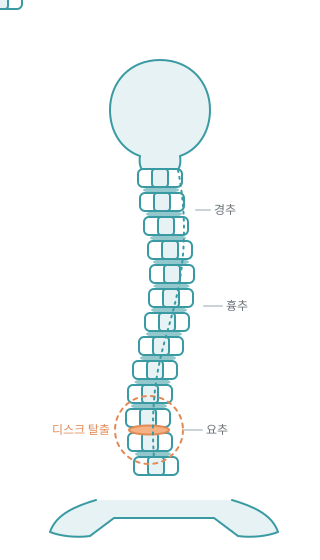
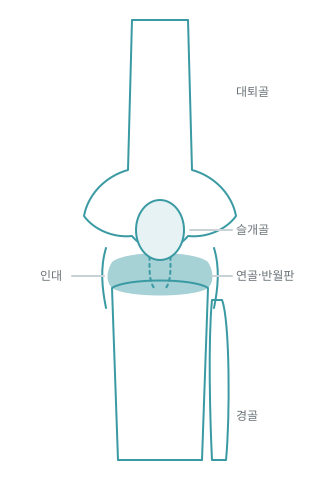
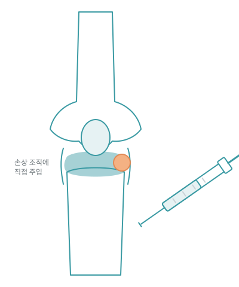

정형외과 전문의가 직접 진단하고, 직접 설명합니다.
진단·치료·재활을 한 곳에서. 과잉 진료 없이 환자마다 다른 치료 계획을 세웁니다.
[원장 성명]대표원장
수술이 꼭 필요한 경우와 아닌 경우를 구분하는 것이 진료의 시작입니다.
엑스레이·초음파로 원인을 먼저 확인하고, 환자별로 치료 순서를 정합니다.
척추 질환은 나이 든 분들의 병으로 여겨지지만, 오래 앉아 일하는 젊은 층에서도 빠르게 늘고 있습니다. 통증이 있을 때 치료하는 것만큼, 척추에 무리를 주지 않는 자세와 생활습관을 익히는 것이 재발을 막는 데 중요합니다. 초기에 정확히 검사하고 단계에 맞는 치료를 받으면 대부분 수술 없이 관리할 수 있습니다.
척추질환의 종류
무릎·어깨·손목·발목 관절은 매일 쓰는 만큼 손상도 빠릅니다. 통증을 참고 지내다 보면 연골 손상이 진행되어 치료 선택지가 줄어듭니다. 초음파로 인대·힘줄 상태를 확인하고, 주사·충격파·운동치료를 조합해 관절 기능을 최대한 보존합니다.
관절질환의 종류
척추·디스크 질환의 상당수는 수술 없이 호전됩니다. 정확한 진단 후 보존적 치료로 충분히 나아질 수 있는 경우, 불필요한 수술을 권하지 않습니다.
정형외과 전문의의 재생 치료로 환자별 최적의 회복을 돕습니다.
손상된 인대·근육·힘줄 조직의 재생을 돕는 근본 치료를 합니다. 최근 젊은 층에서도 늘고 있는 다양한 관절 질환에 맞춰 치료법을 제안합니다.
인체에 부담이 적은 성분을 사용해 임산부·고령·기저질환 환자도 상담 후 치료할 수 있습니다.

정형외과 전문의가 진단 후 도수치료 필요 여부를 결정하고, 신체 기능을 평가합니다.
검사 결과를 바탕으로 치료 목표를 정하고, 전문 치료사와 1:1 맞춤 도수치료를 시작합니다.
치료 경과를 주기적으로 확인하고, 호전 정도에 따라 치료 강도와 계획을 조정합니다.
재발을 막기 위해 집에서 할 수 있는 근력 운동과 자세 교정법을 알려드립니다.
대기 공간부터 치료실까지, 편하게 진료받으실 수 있도록 준비했습니다.
📍 [도로명 주소, 층]
* 일요일·공휴일 휴진 * 주차: [건물 지하주차장 무료]